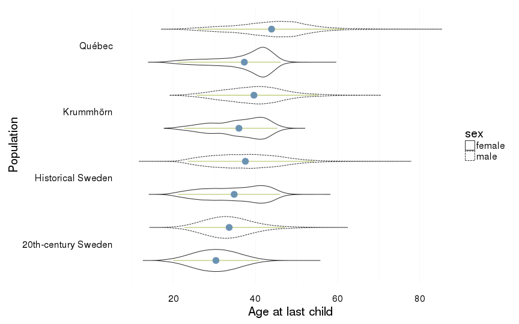

Comparison of descriptives across populations
Loading details
source("0__helpers.R")
opts_chunk$set(render = pander_handler,warning=FALSE,cache=FALSE,tidy=FALSE,autodep=TRUE,dev='png',fig.width=12,fig.height=7.5)
load("rpqa.rdata")
load("ddb.rdata")
load("krmh.rdata")
load("swed1.rdata")
load("swed.rdata")
demo_mod_swed = aggDemoTrends(swed)
demo_old_swed = aggDemoTrends(ddb.1) %>%
mutate(Population = "Historical Sweden") %>%
melt(id=c("Population","Year","Parent")) %>%
group_by(Population,Parent,variable) %>%
summarise(value = mean(value,na.rm=T))
rm(rpqa,ddb, krmh, swed)
desc_theme = theme_minimal(base_size = 24)
update_geom_defaults("bar", list(fill = "#6c92b2", alpha = 1/2))
mymin = theme_minimal(base_size = 20) +theme(panel.grid.major.y =element_blank(),panel.grid.major.x = element_line(colour="#eeeeee"))
rpqa.1$Population = "Québec"
ddb.1$Population = "Historical Sweden"
krmh.1$Population = "Krummhörn"
swed.1$Population = "20th-century Sweden"
all = rbind(
rpqa.1 %>% select(paternalage, maternalage, age_at_1st_child, age_at_last_child, children, male, Population, survive1y,surviveR, ever_married),
ddb.1 %>% select(paternalage, maternalage, age_at_1st_child, age_at_last_child, children, male, Population, survive1y,surviveR, ever_married),
krmh.1 %>% select(paternalage, maternalage, age_at_1st_child, age_at_last_child, children, male, Population, survive1y,surviveR, ever_married),
swed.1 %>% select(paternalage, maternalage, age_at_1st_child, age_at_last_child, children, male, Population, survive1y,surviveR, ever_married)
)
rm(rpqa.1,ddb.1, krmh.1,swed.1)
all = data.table(all)
all[, paternalage := 10 * paternalage]
all[, maternalage := 10 * maternalage]
all[, age_at_1st_child := 10 * age_at_1st_child]
all[, age_at_last_child := 10 * age_at_last_child]
mean_sd = function(x) { paste0(round(mean(x, na.rm=T),2), " (",round(sd(x,na.rm=T),2),")") }
mean_sd_bin = function(x) {
m= mean(x, na.rm=T)
sprintf("%.3f (%.3f)",m,m*(1-m))
}
nodot = function(x) {
names(x) = stringr::str_replace_all(names(x),stringr::fixed(".")," ")
x
}
all[, sex := factor(ifelse(male==1,"male","female"))]
all[, reproductive_timespan := age_at_last_child - age_at_1st_child]
all = all[!is.na(sex), ]
all = data.frame(all)Reproductive timing
demo_mod_swed$Population = "20th-century Sweden"
demo_mod_swed$lty = factor("all", levels = c("first","all","last"))
rep_timing_comp = ggplot(data = demo_mod_swed) +
geom_line(aes(x= Year, y = first, colour = Population, linetype = "first"), colour = "#8A846C", size = 1) +
geom_line(aes(x = Year, y = all, colour = Population, linetype = "all"), size = 1) +
geom_line(aes(x= Year, y = last, colour = Population,linetype = "last"), colour = "#8A846C", size = 1) +
geom_hline(aes(yintercept = value, colour = Population,linetype = variable), data = demo_old_swed, size = 1) +
geom_text(aes(x = 1980 + ifelse(variable == "all", 0, ifelse(variable == "first", -33, 0)),
y = value + 0.3, colour = Population,
label = paste(variable,"births in Sweden 1737-1880")), data = demo_old_swed) +
pop_colour +
scale_linetype_manual("Birth", breaks = c("last", "all","first"), values = c( "solid","dashed", "dotted")) +
geom_text(aes(x = Year, y = all + 0.3,
label = ifelse(Year > 1670 & Year %% 15 == 0, round(all), NA))) +
facet_wrap(~ Parent,scales = "free_y") +
desc_theme +
scale_y_continuous("Parental age at birth", limits = c(23,40)) +
theme(legend.position = c(1,1),
legend.justification = c(1,1),
legend.box = "horizontal",
panel.margin = unit(2, "lines"))
rep_timing_comp
Age at first child
all %>%
group_by(Population, sex) %>%
summarise(value = mean_sd(age_at_1st_child)) %>%
dcast(formula = sex ~ Population) %>% na.omit()| sex | 20th-century Sweden | Historical Sweden | Krummhörn | Québec |
|---|---|---|---|---|
| female | 25.02 (5.09) | 25.85 (4.84) | 26.58 (4.44) | 23.65 (4.87) |
| male | 28.07 (5.6) | 28.13 (5.18) | 29.29 (5.36) | 28.69 (6.01) |
all %>% mutate(age_at_1st_child = ifelse(Population == "20th-century Sweden", age_at_1st_child + runif(n())-0.5, age_at_1st_child)) -> all # want smooth density even though we only have ages at year granularity
ggplot(all, aes(x = Population, y = age_at_1st_child, group = interaction(Population,sex))) +
coord_flip()+
ylab("Age at first child") +
geom_violin(aes(linetype = sex), position = position_dodge(width=1)) +
geom_linerange(stat = "summary", fun.data="median_hilow", colour = "#aec05d", position = position_dodge(width=1)) +
geom_pointrange(stat = "summary", fun.data="mean_cl_boot",colour = "#6c92b2", size = 1, position = position_dodge(width=1)) +
mymin
ggplot(all, aes(x = age_at_1st_child, fill = Population)) +
ylab("Density") +
xlab("Age at first child") +
facet_grid( sex ~ . )+
geom_density(alpha = 0.5, position = position_identity(), colour = NA)+
mymin + pop_colour + pop_fill +
theme(legend.position = c(1,1),
legend.justification = c(1,1)) ->
gg_age_at_1st_child
gg_age_at_1st_childAge at last child
all %>%
group_by(Population, sex) %>%
summarise(value = mean_sd(age_at_last_child)) %>%
dcast(formula = sex ~ Population)| sex | 20th-century Sweden | Historical Sweden | Krummhörn | Québec |
|---|---|---|---|---|
| female | 30.34 (5.41) | 34.79 (7.2) | 35.95 (6.34) | 37.27 (6.88) |
| male | 33.57 (6.14) | 37.52 (8.29) | 39.61 (7.5) | 43.9 (8.95) |
all %>% mutate(age_at_last_child = ifelse(Population == "20th-century Sweden", age_at_last_child + runif(n())-0.5, age_at_last_child)) -> all # want smooth density even though we only have ages at year granularity
ggplot(all, aes(x = Population, y = age_at_last_child, group = interaction(Population,sex))) +
coord_flip()+
ylab("Age at last child") +
geom_violin(aes(linetype = sex), position = position_dodge(width=1)) +
geom_linerange(stat = "summary", fun.data="median_hilow", colour = "#aec05d", position = position_dodge(width=1)) +
geom_pointrange(stat = "summary", fun.data="mean_cl_boot",colour = "#6c92b2", size = 1, position = position_dodge(width=1)) +
mymin
ggplot(all, aes(x = age_at_last_child, fill = Population)) +
ylab("Density") +
xlab("Age at last child") +
facet_grid( sex ~ . )+
geom_density(alpha = 0.5, position = position_identity(), colour = NA)+
mymin + pop_colour + pop_fill +
theme(legend.position = c(1,1),
legend.justification = c(1,1)) ->
gg_age_at_last_child
gg_age_at_last_childReproductive timespan
all %>%
group_by(Population, sex) %>%
summarise(value = mean_sd(reproductive_timespan)) %>%
dcast(formula = sex ~ Population)| sex | 20th-century Sweden | Historical Sweden | Krummhörn | Québec |
|---|---|---|---|---|
| female | 5.32 (4.74) | 8.94 (6.94) | 9.37 (6.61) | 13.62 (7.54) |
| male | 5.5 (5.4) | 9.39 (7.4) | 10.32 (6.97) | 15.21 (8.54) |
all %>% mutate(reproductive_timespan = ifelse(Population == "20th-century Sweden", reproductive_timespan + runif(n())-0.5, reproductive_timespan)) -> all # want smooth density even though we only have ages at year granularity
all %>% mutate(reproductive_timespan = ifelse(reproductive_timespan<0,0,reproductive_timespan)) -> all
ggplot(all, aes(x = Population, y = reproductive_timespan, group = interaction(Population,sex))) +
coord_flip()+
ylab("Reproductive timespan") +
geom_violin(aes(linetype = sex),position = position_dodge(width=1)) +
geom_linerange(stat = "summary", fun.data="median_hilow", colour = "#aec05d", position = position_dodge(width=1)) +
geom_pointrange(stat = "summary", fun.data="mean_cl_boot",colour = "#6c92b2", size = 1, position = position_dodge(width=1)) +
myminggplot(all, aes(x = reproductive_timespan, fill = Population)) +
ylab("Density") +
xlab("Reproductive timespan") +
facet_grid( sex ~ . )+
geom_density(alpha = 0.5, position = position_identity(), colour = NA)+
mymin + pop_colour + pop_fill +
theme(legend.position = c(1,1),
legend.justification = c(1,1))Paternal age
all %>%
group_by(Population) %>%
summarise(value = mean_sd(paternalage)) %>%
dcast(formula = . ~ Population)| . | 20th-century Sweden | Historical Sweden | Krummhörn | Québec |
|---|---|---|---|---|
| . | 31.84 (7.05) | 34.37 (7.69) | 35.23 (7.56) | 36.33 (8.49) |
all %>% mutate(paternalage = ifelse(Population == "20th-century Sweden", paternalage + runif(n())-0.5, paternalage)) -> all # want smooth density even though we only have ages at year granularity
ggplot(all, aes(x = Population, y = paternalage)) +
coord_flip()+
ylab("Paternal age") +
geom_violin() +
geom_linerange(stat = "summary", fun.data="median_hilow", colour = "#aec05d", position = position_dodge(width=0.4)) +
geom_pointrange(stat = "summary", fun.data="mean_cl_boot",colour = "#6c92b2", size = 1, position = position_dodge(width=0.4)) +
myminggplot(aes(x = paternalage), data = all) +
geom_histogram(binwidth=1) +
xlab("Paternal age") +
facet_wrap(~ Population, scale = "free_y") +
mymin
ggplot(all, aes(x = paternalage, fill = Population)) +
ylab("Density") +
xlab("Paternal age") +
geom_density(alpha = 0.5, position = position_identity(), colour = NA)+
mymin + pop_colour + pop_fill +
theme(legend.position = c(1,1),
legend.justification = c(1,1))Maternal age
all %>%
group_by(Population) %>%
summarise(value = mean_sd(maternalage)) %>%
dcast(formula = . ~ Population)| . | 20th-century Sweden | Historical Sweden | Krummhörn | Québec |
|---|---|---|---|---|
| . | 28.34 (6.11) | 31.54 (6.32) | 31.53 (5.88) | 29.57 (6.68) |
all %>% mutate(maternalage = ifelse(Population == "20th-century Sweden", maternalage + runif(n())-0.5, maternalage)) -> all # want smooth density even though we only have ages at year granularity
ggplot(all, aes(x = Population, y = maternalage)) +
coord_flip()+
ylab("Maternal age") +
geom_violin() +
geom_linerange(stat = "summary", fun.data="median_hilow", colour = "#aec05d", position = position_dodge(width=0.4)) +
geom_pointrange(stat = "summary", fun.data="mean_cl_boot",colour = "#6c92b2", size = 1, position = position_dodge(width=0.4)) +
myminggplot(aes(x = maternalage), data = all) +
geom_histogram(binwidth=1) +
xlab("Maternal age") +
facet_wrap(~ Population, scale = "free_y") +
myminggplot(all, aes(x = maternalage, fill = Population)) +
ylab("Density") +
xlab("Maternal age") +
geom_density(alpha = 0.5, position = position_identity(), colour = NA)+
mymin + pop_colour + pop_fill +
theme(legend.position = c(1,1),
legend.justification = c(1,1))Number of children
only those who married
all %>%
filter(ever_married == 1) %>%
group_by(Population, sex) %>%
summarise(value = mean_sd(children)) %>%
dcast(formula = sex ~ Population)| sex | 20th-century Sweden | Historical Sweden | Krummhörn | Québec |
|---|---|---|---|---|
| female | 2.15 (1.11) | 3.66 (3.18) | 3.66 (2.89) | 7.3 (4.6) |
| male | 2.17 (1.18) | 4.04 (3.22) | 4.09 (2.95) | 8 (4.97) |
all %>%
filter(ever_married == 1) %>%
ggplot(aes(x = Population, y = children, group = interaction(Population,sex))) +
coord_flip()+
geom_violin(aes(linetype = sex),position = position_dodge(width=1)) +
geom_linerange(stat = "summary", fun.data="median_hilow", colour = "#aec05d", position = position_dodge(width=1)) +
geom_pointrange(stat = "summary", fun.data="mean_cl_boot",colour = "#6c92b2", size = 1, position = position_dodge(width=1)) +
myminall %>%
filter(ever_married == 1) %>%
ggplot(aes(x = children, y = ..density.., fill = Population)) +
geom_histogram(aes(y = ..density..), position = position_dodge(width = 1),binwidth=1.1) +
scale_x_continuous(breaks = seq(0,25,by=2)) +
mymin +
theme(legend.position = c(1,1),
legend.justification = c(1,1))all %>%
filter(ever_married == 1) %>%
ggplot(aes(x = children)) +
geom_histogram(binwidth=1) +
facet_wrap(~ Population, scale = "free_y") +
myminonly those who had children at all
all %>%
filter(children > 0) %>%
group_by(Population, sex) %>%
summarise(value = mean_sd(children)) %>%
dcast(formula = sex ~ Population)| sex | 20th-century Sweden | Historical Sweden | Krummhörn | Québec |
|---|---|---|---|---|
| female | 2.29 (0.95) | 4.53 (2.9) | 4.41 (2.6) | 7.97 (4.2) |
| male | 2.33 (1.01) | 4.68 (3) | 4.76 (2.63) | 8.66 (4.58) |
all %>%
filter(children > 0) %>%
ggplot(aes(x = Population, y = children, group = interaction(Population,sex))) +
coord_flip()+
geom_violin(aes(linetype = sex),position = position_dodge(width=1)) +
geom_linerange(stat = "summary", fun.data="median_hilow", colour = "#aec05d", position = position_dodge(width=1)) +
geom_pointrange(stat = "summary", fun.data="mean_cl_boot",colour = "#6c92b2", size = 1, position = position_dodge(width=1)) +
myminall %>%
filter(children > 0) %>%
ggplot(aes(x = children, y = ..density.., fill = Population)) +
geom_histogram(aes(y = ..density..), position = position_dodge(width = 1),binwidth=1.1) +
scale_x_continuous(breaks = seq(0,25,by=2)) +
mymin +
theme(legend.position = c(1,1),
legend.justification = c(1,1))all %>%
filter(children > 0) %>%
ggplot(aes(x = children)) +
geom_histogram(binwidth=1) +
facet_wrap(~ Population, scale = "free_y") +
myminall included, including those who died in childhood
all %>%
group_by(Population, sex) %>%
summarise(value = mean_sd(children)) %>%
dcast(formula = sex ~ Population)| sex | 20th-century Sweden | Historical Sweden | Krummhörn | Québec |
|---|---|---|---|---|
| female | 1.91 (1.22) | 1.04 (2.36) | 1.78 (2.72) | 3.93 (4.96) |
| male | 1.79 (1.32) | 0.96 (2.32) | 1.62 (2.73) | 3.68 (5.22) |
all %>%
ggplot(aes(x = Population, y = children, group = interaction(Population,sex))) +
coord_flip()+
geom_violin(aes(linetype = sex),position = position_dodge(width=1)) +
geom_linerange(stat = "summary", fun.data="median_hilow", colour = "#aec05d", position = position_dodge(width=1)) +
geom_pointrange(stat = "summary", fun.data="mean_cl_boot",colour = "#6c92b2", size = 1, position = position_dodge(width=1)) +
myminggplot(all, aes(x = children, y = ..density.., fill = Population)) +
geom_histogram(aes(y = ..density..), position = position_dodge(width = 1),binwidth=1.1) +
mymin +
theme(legend.position = c(1,1),
legend.justification = c(1,1))ggplot(aes(x = children), data = all) +
geom_histogram(binwidth=1) +
facet_wrap(~ Population, scale = "free_y") +
myminChild mortality
number of children surviving their first year
opts_chunk$set(message=FALSE,warning=FALSE)
load("swed2.rdata")
swed.2$Population = "20th-century Sweden"
all = data.table(all)
all = rbind(
all[Population != "20th-century Sweden", list(paternalage, maternalage, age_at_1st_child, age_at_last_child, children, male, Population, survive1y,surviveR)],
swed.2[byear < 1990, list(paternalage, maternalage, age_at_1st_child, age_at_last_child, children, male, Population, survive1y,surviveR)]
)
rm(swed.2)
all = setDF(all)
all$sex = factor(ifelse(all$male==1,"male","female"))
all$reproductive_timespan = all$age_at_last_child - all$age_at_1st_child
all$`Birth outcome` = 1+all$survive1y+all$surviveR
all = all[!is.na(all$sex), ]
library(formr)
in_100 = function(x) {
x = na.omit(x)
prop = round(mean(x) * 100)
c(rep("lived to 1 year", prop), rep("died", 100-prop))
}
counts_unit = function(x, unit = 1000) {
x = na.omit(x)
bigger_units = round(table(x)/unit)
bins = paste(unit,names(bigger_units))
factor(rep(bins,bigger_units), levels = bins)
}
qwaffle = function(Pop, unit = 1000) {
all %>%
filter(Population == Pop) %>%
.[, "Birth outcome"] %>%
counts_unit(., unit) %>%
qplot_waffle_tile() +
theme(text = element_text(size = 30)) +
scale_fill_manual(paste(unit, "births"),breaks=1:3,labels=c("births who lived up to 1y","births who lived 1y-15y","births who lived 15y+"), values=c("darkred","red","gray90")) +
ggtitle(Pop)
}
all %>%
group_by(Population, sex) %>%
summarise(value = mean_sd_bin(survive1y)) %>%
dcast(formula = sex ~ Population)| sex | 20th-century Sweden | Historical Sweden | Krummhörn | Québec |
|---|---|---|---|---|
| female | 0.995 (0.005) | 0.880 (0.105) | 0.889 (0.099) | 0.793 (0.164) |
| male | 0.993 (0.007) | 0.859 (0.121) | 0.871 (0.113) | 0.775 (0.174) |
number of children surviving to 15
all %>%
group_by(Population, sex) %>%
summarise(surviveR = mean_sd_bin(surviveR)) %>%
dcast(formula = sex ~ Population)| sex | 20th-century Sweden | Historical Sweden | Krummhörn | Québec |
|---|---|---|---|---|
| female | 0.992 (0.008) | 0.724 (0.200) | 0.741 (0.192) | 0.674 (0.220) |
| male | 0.990 (0.010) | 0.688 (0.215) | 0.727 (0.198) | 0.668 (0.222) |